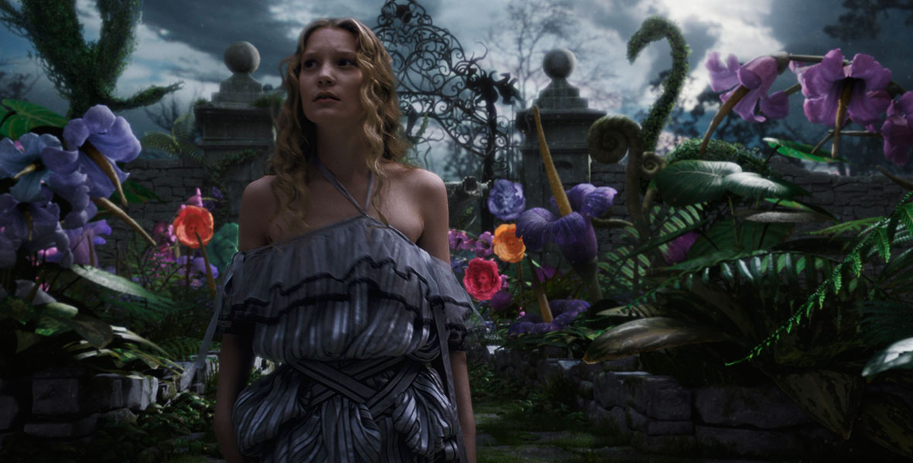

Alicia en el País de las Maravillas (2010)
La novela de fantasía de Lewis Carroll de 1865 sale a pasear a la gran pantalla de la mano del director Tim Burton,
que presenta su propia interpretación de la obra de la forma más realista posible.
Con un elenco de actores y actrices digno para dar vida a personajes tan carismáticos... y algo alocados
